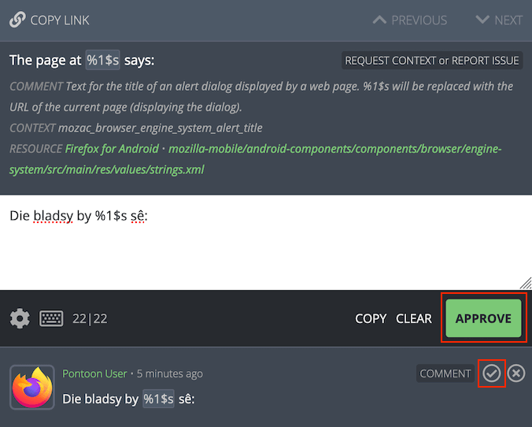
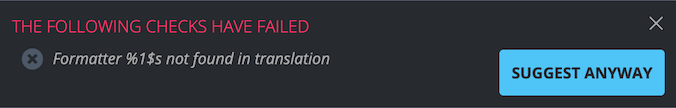
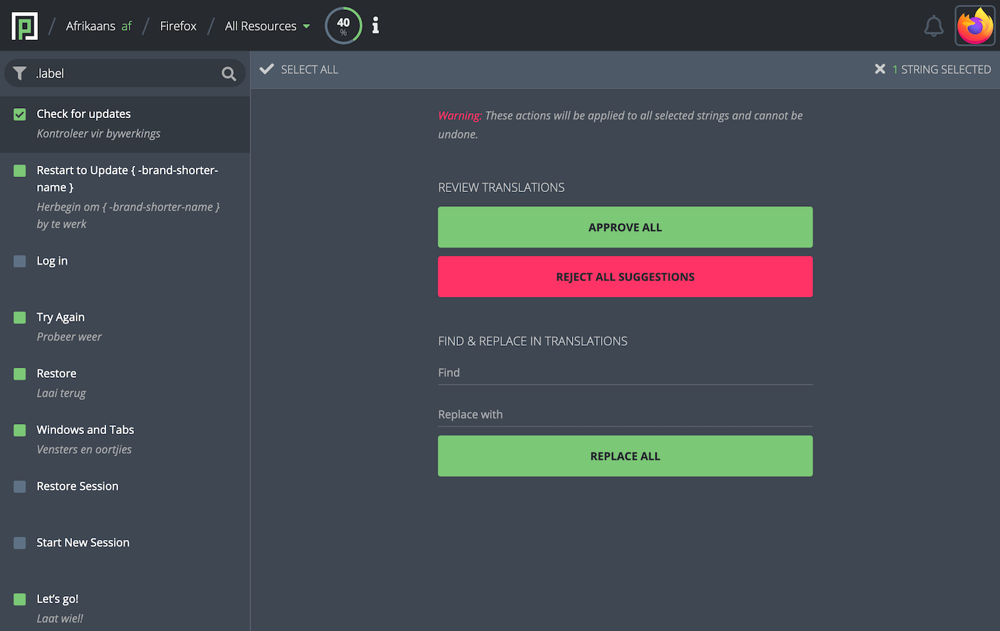
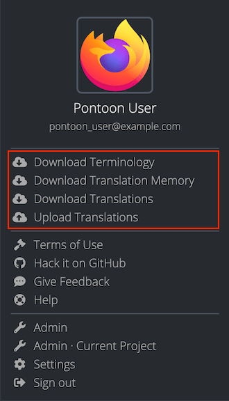

How to translate
This document describes briefly how to translate and review strings in Pontoon. The documentation includes dedicated pages for learning more about Pontoon’s interface and translation tools.
Translating strings
When a string is selected in the sidebar, users can input a translation using the editor available in the middle of the page. Note that, if the string already has a translation, the editor will be pre-populated with text that the user can modify.
Depending on the current translation mode, the UI will look slightly different.
When the user is in Suggestion Mode — manually selected, or because the user doesn’t have permissions to submit translations directly — a blue SUGGEST button will be displayed in the lower-right side of the editing space.

To suggest a translation, the user can input the text in the editor and click SUGGEST. The suggestion will then be displayed below the editing space and in the sidebar where, in the case of multiple suggestions, only the most recent one will be displayed.
Note that a suggestion exists only in the Pontoon database, and it’s not added to the translation memory. For projects using version control systems, the translation is not stored in localized files outside of Pontoon.
When the user is in Translation Mode, a green SAVE button will be displayed instead of SUBMIT. When saving a translation:
- The translation will be displayed directly below the editing space and in the sidebar.
- The translation will be stored in the version control system (where applicable).
- All pending suggestions or pretranslations will be rejected.
Manually switch to suggestion mode
Even if the user has permissions to add translations directly, submitting suggestions to be reviewed by another person helps ensure quality. To manually switch to Suggestion Mode, click the settings icon in the lower-left side of the editing space and select Make suggestions. The SUGGEST button will be displayed in the lower-right side of the editing space, replacing the green SAVE button.

To switch back to Translation Mode, click the settings icon again and turn off Make suggestions.
Reviewing strings
To review a suggestion or pretranslation, search for unreviewed or pretranslated strings in the sidebar.
If the current translation is acceptable, either click on the APPROVE button in the lower-right side of the editing space, or click on the approve icon to the right of the text. This will transform the suggestion or pretranslation into an approved translation. In the case of suggestions, the approved translation will also be stored in the version control system (where applicable).

If the current translation is not acceptable, it can be rejected by clicking the reject icon to the right of the suggestion. After rejecting a suggestion or pretranslation, it’s also possible to delete it completely by clicking the trashcan icon. In the case of pretranslations, the rejected text will be also removed from version control systems (where applicable).
Alternatively, it’s possible to provide a different suggestion: turn on Make suggestions, edit the translation as appropriate, and click SUGGEST. This will add the translation as a new suggested string.
Quality checks
When submitting a translation or suggestion, Pontoon performs automated quality checks. They are meant to help localizers identify issues with punctuation, capitalization, variables, etc. before translations are saved. Failures for these checks are stored in the database, and it’s possible to filter strings with issues from the search bar.
There are two types of quality check failures: errors and warnings.
Errors
Errors cover critical issues that would cause the string to be removed from products. For this reason, errors cannot be bypassed by localizers - the button to submit a translation is removed and the error needs to be fixed before the translation can be saved.
Examples include exceeding the maximum string length, incorrect syntax, etc. Errors are denoted with a circled X with red background.

Warnings
Warnings are displayed when potential issues are detected in the string, but it’s not certain that they will create problems in products (unlike errors). For that reason, warnings can be bypassed by localizers, allowing them to save a translation anyway.
Examples include missing punctuation, differences in number of sentences and capitalization, etc. Warnings are denoted with a circled X with gray background.

Certain types of checks reported by the Translate Toolkit library may result in many false positives. For this reason, they can be completely disabled.
Performing batch actions on strings
Mass actions can be performed on multiple strings at once by clicking on the square to the left of any string in the sidebar. When clicked, the square will show a checkmark and the editing space will show the mass action panel. Note that mass actions are only available to users with translator permissions.

To select a range of strings, select the first one and hold SHIFT, then select the last one. To select all strings, click SELECT ALL on the top-right of the mass action panel. The number of selected strings will appear on the top-left, next to the Exit icon.
To return back to the default editing space, click the Exit icon on the top-right of the mass action panel.
In the REVIEW TRANSLATIONS section, the user can approve or reject suggestions for all selected strings. Upon clicking APPROVE ALL or REJECT ALL SUGGESTIONS, the label of the button will be replaced with the number of affected translations.
Note that APPROVE ALL accepts the latest suggestion, but doesn’t reject other suggestions if available.
In the FIND & REPLACE IN TRANSLATIONS section, the user can input the text to search for, and the text to replace it with. This is a basic find and replace feature that will work only on the selected strings.
Downloading and uploading translations
Pontoon provides the ability to download and upload translations, including terminology and translation memories. To access these features, click on the profile icon in the top-right corner of any page. Note that the user must be in the translation workspace for the download/upload options to be displayed in the dropdown menu.

Anyone can download terminology (.tbx), translation memory (.tmx) and translations, while only users with translator permissions can upload translations. When downloading translations:
- The resource currently selected is downloaded in its original format, it’s not converted in any way.
- If the project contains multiple files, a ZIP of all files is downloaded. If the project contains more than 10 files, only the file currently translated will be downloaded.
When uploading translations to Pontoon:
- Translations different from the ones in Pontoon will be imported and attributed to the user uploading the file.
- Translations matching the ones in Pontoon will be ignored.
Downloading .tbx and .tmx files via command line
Terminology (.tbx) and translation memory (.tmx) files can grow big in size over time. To download files via command line it is advised to use curl command with the --compressed flag, to reduce download times and avoid request timeouts.
Here’s an example command to download German (de) .tmx file across all projects from pontoon.mozilla.org:
curl -o de.all-projects.tmx --compressed https://pontoon.mozilla.org/translation-memory/de.all-projects.tmx
Note that Terminology files can be downloaded in the TBX 2008 (v2) format in addition to the default TBX v3 format available via the profile menu.
Here’s an example command to download German (de) .tbx file in the TBX 2008 (v2) format from pontoon.mozilla.org:
curl -o de.v2.tbx --compressed https://pontoon.mozilla.org/terminology/de.v2.tbx